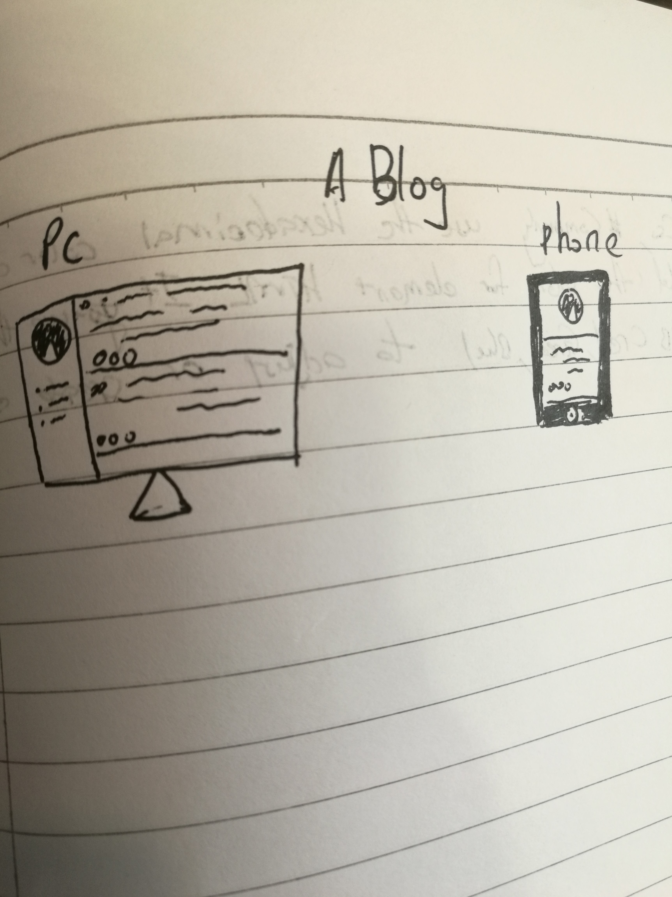

Screen resolution is the number of pixels on the screen (number of horizontal pixle*the number of verticla pixels), the number of pixel will decided the quality of image when dispaly on the screen. there are two type of common devices of screen resolution for webpage. First is the computer. Generally have 320*240, 640*480, 1024*768, 1280*1024,when the pixels reach 720p(1280*720) or 1080p(1920*1080) means the image is high definition, it depends on the number of horizotal pixel because our eyes more sensitive to the horizontal revolution.The previous of computer almost use 4:3, but after the widescreen was invented, 16:10 start popular. Second is handphone. screen resolution is one of the important of parameters of handphone, commonly is 240*320. Either computer or handphone, when use the different scrren resolution of device to open the web pages, the clarity and quality of image also will different.
